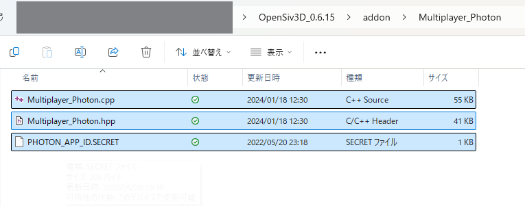

Siv3Dでオンラインマルチプレイヤーゲームを作ろう！¶
Siv3Dのアドオンとして提供されている、Multiplayer_Photonを用いてオンラインマルチプレイヤーゲームを作るチュートリアルです。
Siv3D for Webを用いる場合にはSiv3D for Webでオンラインマルチプレイヤーゲームを作ろう！を参照してください。
準備 1 | Photon SDK のダウンロード¶
開発環境に応じた Photon Realtime SDK （7z 形式で圧縮）をダウンロードします。OpenSiv3D v0.6.15 で検証済みの SDK バージョンは v5.0.11.0 です。
 WindownsならREALTIME Windowsを選択。
WindownsならREALTIME Windowsを選択。
 SDKをダウンロードの横のリンクをクリック。
SDKをダウンロードの横のリンクをクリック。
ダウンロードした7z 形式のファイルを展開し、適当な場所に配置します（これ以降の手順でプロジェクトのインクルード / ライブラリパスをこのフォルダパスに対して設定するため、これ以降は移動させないでください。）
準備2 | プロジェクトの準備¶
- 通常どおり Siv3D アプリケーションプロジェクト (v0.6.15) を作成します。
-
Siv3D SDK フォルダ内の
addon/Multiplayer_Photonフォルダから 3 つのファイルMultiplayer_Photon.hpp,Multiplayer_Photon.cpp,PHOTON_APP_ID.SECRETをコピーして、プロジェクトの Main.cpp があるフォルダに配置します。

Siv3D SDK
Siv3D をインストールしたときに作成されるフォルダです。macOS の場合それ自体、Windows の場合はデフォルトでドキュメントフォルダに OpenSiv3D_0.6.* という名前で作成されます
-
Multiplayer_Photon ライブラリを自分のプロジェクトで使うために、コピーした
Multiplayer_Photon.hppとMultiplayer_Photon.cppをプロジェクトに追加し、ビルド対象に含むようにします（ただし、このままでは Photon SDK へのインクルード・ライブラリパスが通っていないため、ビルドには失敗します）Visual Studio の場合の参考動画
-
(Windows の場合) プロジェクトの設定で、インクルードディレクトリとライブラリディレクトリそれぞれに、ダウンロードした Photon SDK フォルダのパス (例: C:/Users/siv3d/Desktop/libs/Photon-Windows-Sdk_v5-0-3-0) を追加します
- (macOS の場合) プロジェクトの設定で、ダウンロードした Photon SDK フォルダのパスを Build Settings の Header Search Paths に追加し、Library Search Paths に ???/Common-cpp/lib, ???/LoadBalancing-cpp/lib, ???/Photon-cpp/lib, ???/3rdparty/lib/apple の 4 つのパスを追加 (??? は Photon SDK フォルダのパス) したうえで、Build Phases の Link Binary With Libraries に、それらのフォルダの中身のうち libCommon-cpp_release_macosx.a, libLoadBalancing-cpp_release_macosx.a, libPhoton-cpp_release_macosx.a, libcrypto_release_macosx.a の 4 ファイルを追加します
- これでビルドができればプロジェクトの準備は完了です
準備3 | Photon App ID を取得し、プロジェクトに設定する¶
Photon Web サイトログイン後、ダッシュボード画面を開きます。

ダッシュボード画面の CREATE A NEW APP を押して情報を入力し、CREATE から新しい Photon App ID を発行します。Photon Type は Realtime を選択します。それ以外の入力項目は任意です。

- 発行される Photon App ID は
"xxxxxxxx-xxxx-xxxx-xxxx-xxxxxxxxxxxx"のような英数字の羅列です。 - プロジェクトの PHOTON_APP_ID.SECRET に書かれているデフォルトの App ID
"00000000-0000-0000-0000-000000000000"を、発行された Photon App ID で上書きします。 - (プロジェクトを git 管理している場合) この Photon App ID は第三者に知られてはいけません。
.gitignoreを用いて、PHOTON_APP_ID.SECRETを管理対象から外すようにしましょう